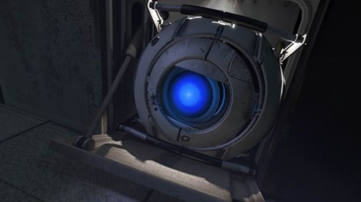
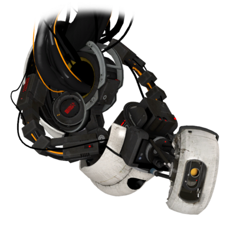

Wheatley is from the world of Portal, specifically from Portal 2. Wheatley is a core, meaning he is a round little robot meant to flood GLaDOS (the primary central intelligence of the facility) with terrible ideas so she is slowed down and can't kill everyone.
Wheatley primary skill is always to make the worst decision at any time, no matter what it is. When he takes over the facility, instead of maintaining essential functions such as venting the reactors, he does not do it, causing the place almost to explode.
Wheatley is a funny character, not on purpose but because he is trying to be helpful, but often has his plans fail in some way because he did not think it through. For example, he has a plan to get rid of the neurotoxin and the turrets, but not what to do when confronting GLaDOS.
Some of my favourite quotes from Wheatley are:
Thanks for the hate crime, Jer! See you in court, mate.
We should be getting close. Ohh, I can't wait to see the look on her face. No neurotoxin, no turrets--she'll never know what hit her! Hold on now. I might not have thought this next part COMPLETELY through.
You know, I'd tell you if I were dead. Courtesy. Mark of a civil society. So, just let me know.